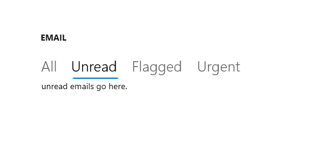

Pivot
The Pivot control enables touch-swiping between a small set of content sections.

Is this the right control?
Warning
The Pivot control is not recommended for Windows 11 design patterns. We strongly recommend using one of these alternatives instead:
- WinUI 3 - Use the SelectorBar control.
- WinUI 2/UWP - Use a NavigationView or TabView control instead of a Pivot control. See the Use NavigationView instead of Pivot section for an example.
To create a Pivot-like UI when using WinUI 3 and the Windows App SDK, use the SelectorBar control.
To create a tabbed UI, use a TabView control.
To achieve common top navigation patterns, we recommend using NavigationView, which automatically adapts to different screen sizes and allows for greater customization.
Some key differences between the NavigationView and Pivot are listed here:
- Pivot supports touch-swiping to switch between items.
- Overflow items in a Pivot carousel, while NavigationView uses a menu dropdown overflow so that users can see all items.
- Pivot handles navigation between content sections, while NavigationView allows for more control over navigation behavior.
Use NavigationView instead of Pivot
If your app's UI uses the Pivot control, you can convert Pivot to NavigationView following this example.
This XAML creates a NavigationView with 3 sections of content, like the example Pivot in Create a pivot control.
<NavigationView x:Name="rootNavigationView" Header="Category Title"
ItemInvoked="NavView_ItemInvoked">
<NavigationView.MenuItems>
<NavigationViewItem Content="Section 1" x:Name="Section1Content" />
<NavigationViewItem Content="Section 2" x:Name="Section2Content" />
<NavigationViewItem Content="Section 3" x:Name="Section3Content" />
</NavigationView.MenuItems>
<Frame x:Name="ContentFrame" />
</NavigationView>
<Page x:Class="AppName.Section1Page">
<TextBlock Text="Content of section 1."/>
</Page>
<Page x:Class="AppName.Section2Page">
<TextBlock Text="Content of section 2."/>
</Page>
<Page x:Class="AppName.Section3Page">
<TextBlock Text="Content of section 3."/>
</Page>
NavigationView provides more control over navigation customization and requires corresponding code-behind. To accompany the above XAML, use the following code-behind:
private void NavView_ItemInvoked(NavigationView sender, NavigationViewItemInvokedEventArgs args)
{
var navOptions = new FrameNavigationOptions
{
TransitionInfoOverride = args.RecommendedNavigationTransitionInfo,
IsNavigationStackEnabled = false,
};
switch (args.InvokedItemContainer.Name)
{
case nameof(Section1Content):
ContentFrame.NavigateToType(typeof(Section1Page), null, navOptions);
break;
case nameof(Section2Content):
ContentFrame.NavigateToType(typeof(Section2Page), null, navOptions);
break;
case nameof(Section3Content):
ContentFrame.NavigateToType(typeof(Section3Page), null, navOptions);
break;
}
}
This code mimics the Pivot control's built-in navigation experience, minus the touch-swiping experience between content sections. However, as you can see, you could also customize several points, including the animated transition, navigation parameters, and stack capabilities.
Create a pivot control
Warning
The Pivot control is not recommended for Windows 11 design patterns. We strongly recommend using one of these alternatives instead:
- WinUI 3 - Use the SelectorBar control.
- WinUI 2/UWP - Use a NavigationView or TabView control instead of a Pivot control. See the Use NavigationView instead of Pivot section for an example.
This XAML creates a basic Pivot control with 3 sections of content.
<Pivot x:Name="rootPivot" Title="Category Title">
<PivotItem Header="Section 1">
<!--Pivot content goes here-->
<TextBlock Text="Content of section 1."/>
</PivotItem>
<PivotItem Header="Section 2">
<!--Pivot content goes here-->
<TextBlock Text="Content of section 2."/>
</PivotItem>
<PivotItem Header="Section 3">
<!--Pivot content goes here-->
<TextBlock Text="Content of section 3."/>
</PivotItem>
</Pivot>
Pivot items
Pivot is an ItemsControl, so it can contain a collection of items of any type. Any item you add to the Pivot that is not explicitly a PivotItem is implicitly wrapped in a PivotItem. Because a Pivot is often used to navigate between pages of content, it's common to populate the Items collection directly with XAML UI elements. Or, you can set the ItemsSource property to a data source. Items bound in the ItemsSource can be of any type, but if they aren't explicitly PivotItems, you must define an ItemTemplate and HeaderTemplate to specify how the items are displayed.
You can use the SelectedItem property to get or set the Pivot's active item. Use the SelectedIndex property to get or set the index of the active item.
Pivot headers
You can use the LeftHeader and RightHeader properties to add other controls to the Pivot header.
For example, you can add a CommandBar in the Pivot's RightHeader.
<Pivot>
<Pivot.RightHeader>
<CommandBar>
<AppBarButton Icon="Add"/>
<AppBarSeparator/>
<AppBarButton Icon="Edit"/>
<AppBarButton Icon="Delete"/>
<AppBarSeparator/>
<AppBarButton Icon="Save"/>
</CommandBar>
</Pivot.RightHeader>
</Pivot>
Pivot interaction
The control features these touch gesture interactions:
- Tapping on a pivot item header navigates to that header's section content.
- Swiping left or right on a pivot item header navigates to the adjacent section.
- Swiping left or right on section content navigates to the adjacent section.
The control comes in two modes:
Stationary
- Pivots are stationary when all pivot headers fit within the allowed space.
- Tapping on a pivot label navigates to the corresponding page, though the pivot itself will not move. The active pivot is highlighted.
Carousel
- Pivots carousel when all pivot headers don't fit within the allowed space.
- Tapping a pivot label navigates to the corresponding page, and the active pivot label will carousel into the first position.
- Pivot items in a carousel loop from last to first pivot section.
Tip
- Avoid using more than 5 headers when using carousel mode, as looping more than 5 can become confusing.
- Pivot headers should not carousel in a 10ft environment. Set the IsHeaderItemsCarouselEnabled property to
falseif your app will run on Xbox.
UWP and WinUI 2
Important
The information and examples in this article are optimized for apps that use the Windows App SDK and WinUI 3, but are generally applicable to UWP apps that use WinUI 2. See the UWP API reference for platform specific information and examples.
This section contains information you need to use the control in a UWP or WinUI 2 app.
APIs for this control exist in the Windows.UI.Xaml.Controls namespace.
- UWP APIs: Pivot class
- Open the WinUI 2 Gallery app and see the Pivot in action. The WinUI 2 Gallery app includes interactive examples of most WinUI 2 controls, features, and functionality. Get the app from the Microsoft Store or get the source code on GitHub.
We recommend using the latest WinUI 2 to get the most current styles and templates for all controls.